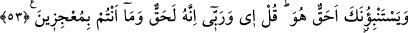

53. “Sâhiden o gerçek mi?” diye senden soruyorlar. De ki: “Evet, Rabb’im hakkı
için o gerçektir. Siz Allah’ı âciz bırakamazsınız.”
“Sâhiden o gerçek mi?” diye” dalga geçip inkâr ederek “senden soruyorlar.” Haber
vermeni istiyorlar. Dalga geçmelerine bakmadan işi hikmet üzerine bina ederek onlara
“de ki: “Evet, Rabb’im hakkı için o” vaadedilen azap “gerçektir.” Kesinlikle
gelecektir. “Siz,” size azâb etmeyi dilediği zaman “Allah’ı âciz bırakamazsınız.” ki
kaçmak sûretiyle azaptan kurtulabilesiniz. O hiç şüphesiz sizi yakalayacak, azab
başınıza gelecektir.
Âyette şuna işâret edilmektedir: Kâinattaki bir takım şeylere bağlanma hicabları
yüzünden basiretleri bağlanan ehl-i gaflete göre uhrevî meseleler hissedilir şeyler
değildir.
Uyanık kişiler; ehl-i yakaza ise Allah Teâlâ’nın nuru ile nurlandıklarından beden
gözleriyle nasıl dünyayı ve çeşitli hallerini görüyorlarsa, kalp gözleriyle de hem âhireti
hem de âhiretin dehşetli sahnelerini görürler. Ahiret ahvali onlara göre hissedilip
algılanan şeyler mesâbesindedir.
Hatta Hz. Peygamber (s.a.) mirac gecesi cennete ve cehenneme uğramış, gördüklerini
baş gözüyle görmüş, varlıkların hakiki durumlarını keşfetmiştir. Bu yüzden de tehdid
edilen azabın hak olduğuna hükmetmiştir.